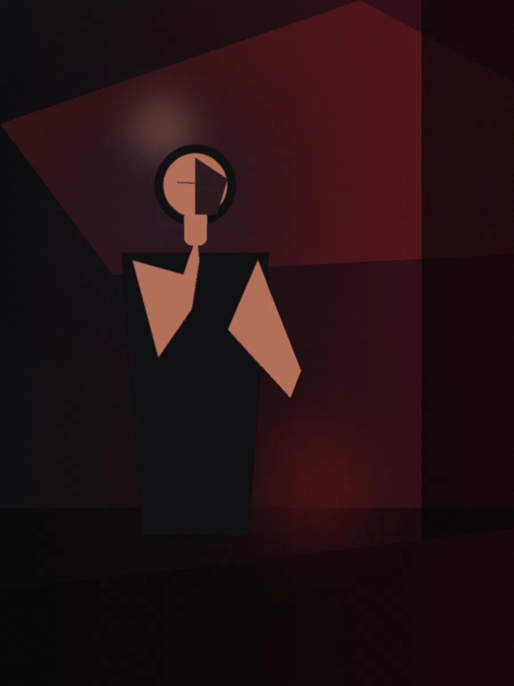
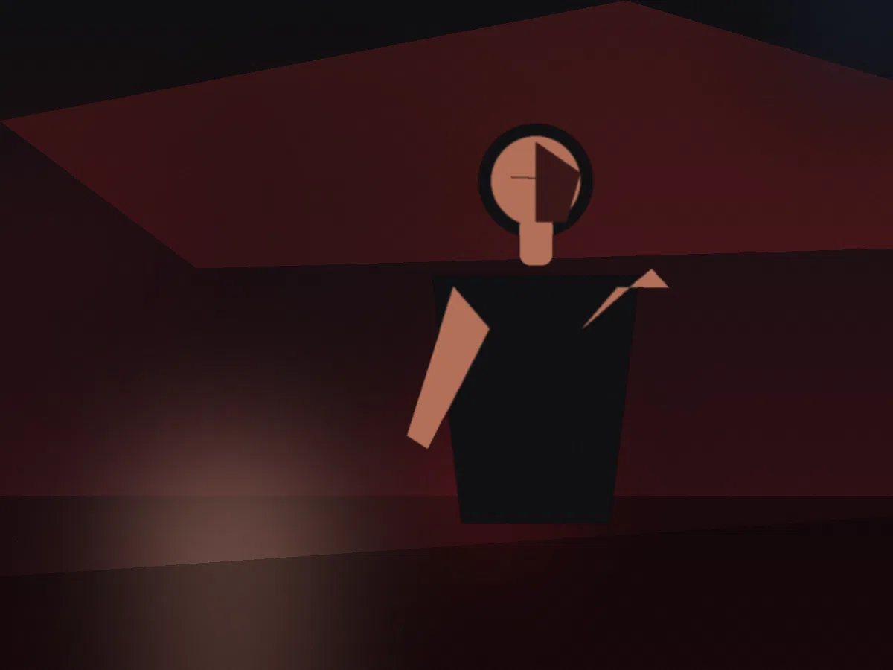
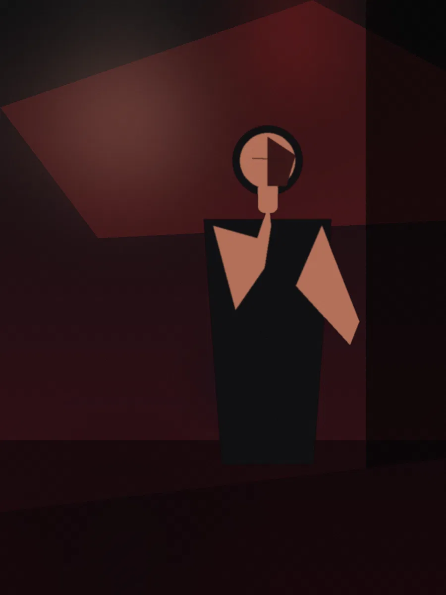
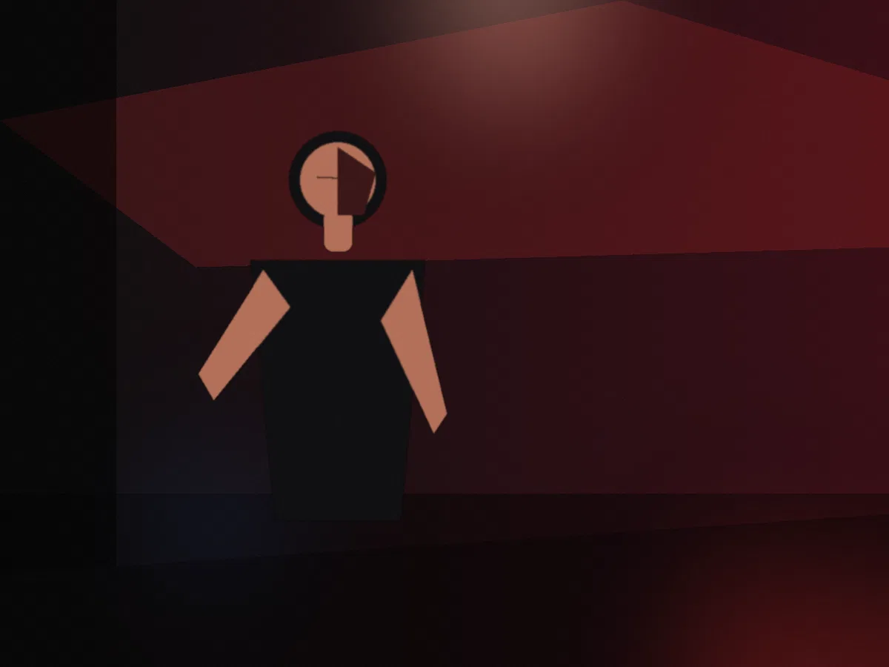
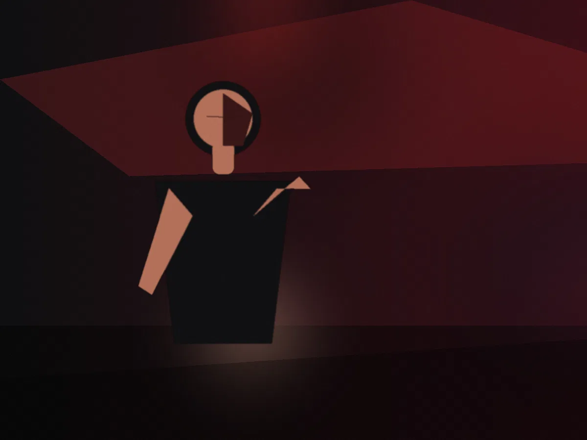
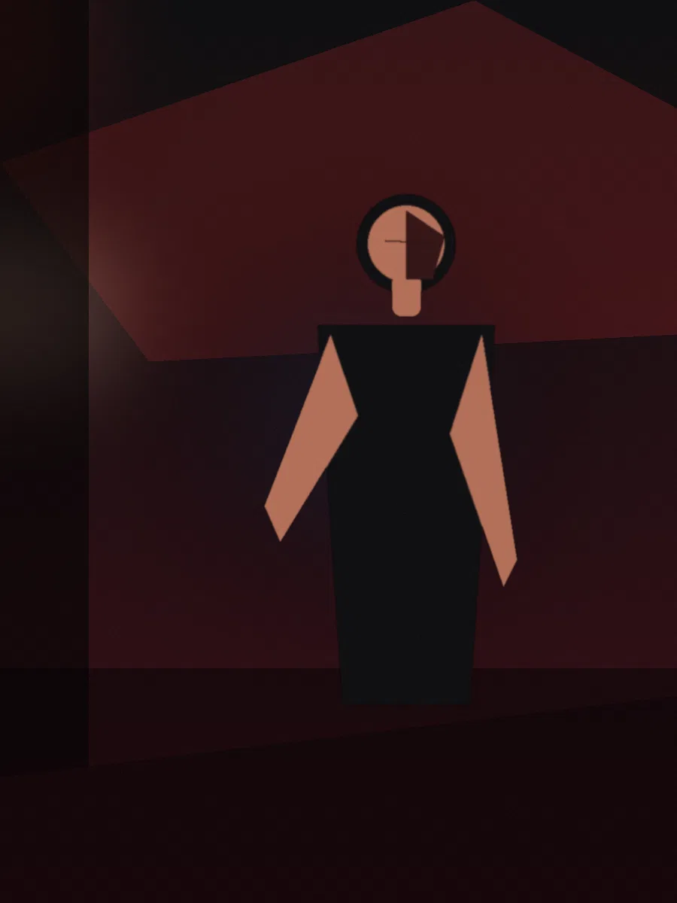

Demo project / Presence / 2026
Nocturne
Presence without polish erasing personality. A portrait assignment built around restraint, shadow, proximity, and the subject's own tension.
Photography / Direction
Placeholder assignment
Placeholder assignment
The assignment
Make the person feel specific.
The commercial problem in portraiture is rarely “we need a headshot.” It is usually that the person is more compelling in real life than their existing visual presence allows. The direction here is designed to preserve edge, contradiction, and presence rather than sand everything into professional neutrality.


Shot logic
Alternate intimacy with distance. Let one frame confront, let the next withhold. A sequence becomes memorable when every image is not trying to win the same argument.



Presence